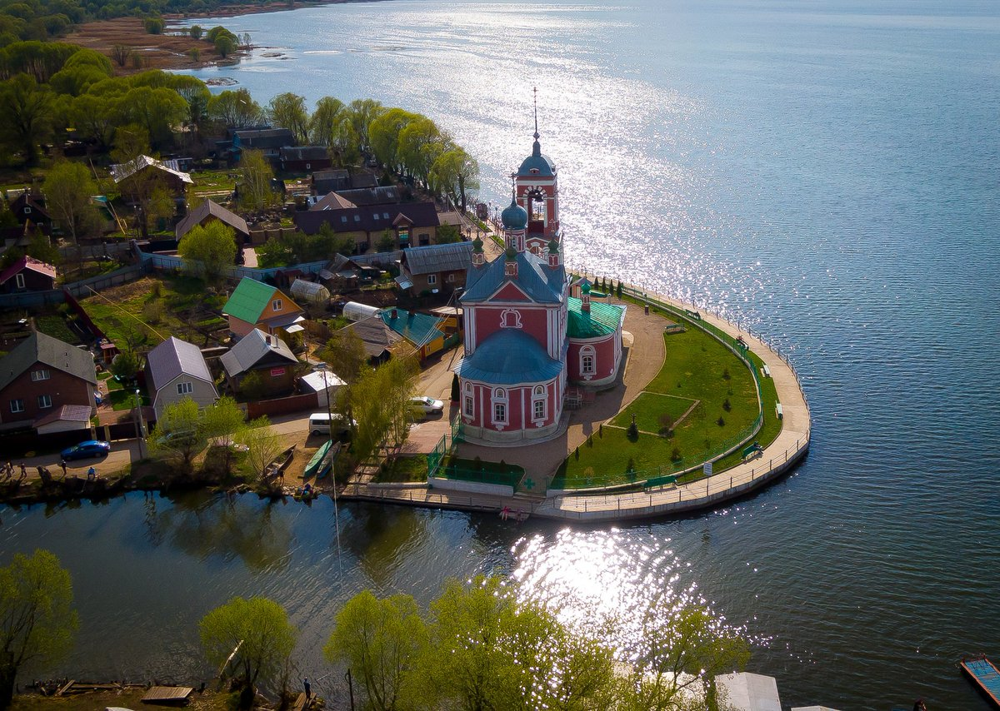
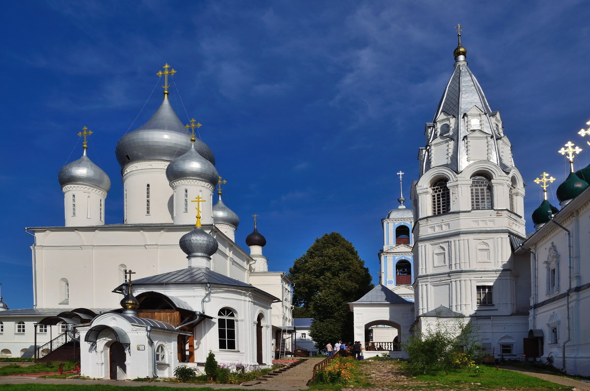

Переславль-Залесский
 
Город Переславль-Залесский одним своим названием приглашает в сказку. И правда, город возрастом почти 10 веков выглядит как из старинных русских сказок: белокаменные храмы на берегу загадочного Плещеева озера, деревянные дома с резными наличниками и камень, исполняющий желания. Город входит в самый популярный туристический маршрут России — Золотое кольцо, а значит, здесь отлично развита инфраструктура для путешественников.
В Переславле-Залесском вы увидите и шедевры древнерусских зодчих, и Плещеево озеро. В музеях города предлагаются интерактивные программы и мастер-классы для детей и взрослых. Так как достопримечательностей в городе довольно много, лучше заранее составить маршрут.
Достопримечательности
Спасо-Преображенский собор
Единственная каменная постройка Переславского кремля, сохранившаяся до наших дней — это Спасо-Преображенский собор. Заложенный в 1152 году Юрием Долгоруким и достроенный Андреем Боголюбским, собор является одним из древнейших белокаменных памятников Северо-Восточной Руси. В древности высота храма составляла 22 метра, но с веками он осел на 1 метр. Внешний вид Спасо-Преображенского собора — аскетичный и строгий, он сложен из белокаменных блоков в полубутовой технике.

Владимирский собор и Церковь Александра Невского
Эти два сооружения очень похожи между собой. Пятиглавые храмы расположены рядом с центральной дорогой недалеко от Переславлевской Красной площади. Основали их в середине XVIII века на пожертвования местного мануфактурщика Ф. Угрюмова, хозяина фабрики. Поначалу эти храмы входили в состав Новодевичьего Богородицко-Сретенского монастыря, а после ликвидации обедневшей пустыни переформировались в приходские.
Церковь Петра Митрополита
Церковь Петра Митрополита, расположенная по соседству с Владимирским собором, была построена в XVI веке. Она представляет собой шатровый храм, выстроенный на месте остановки митрополита всея Руси Петра Ратенского. Ранее здесь стояла деревянная церковь. Интересно, что внутри храм поделен 2 ярусами на 2 престола: нижний был освящен в честь Михаила Архистратига, а верхний — митрополита Петра.
Свято-Никольский монастырь
Главные достопримечательности Переславля-Залесского, как и других городов Золотого кольца, — это храмы прошлых веков.Cвятая обитель был основана в 1348 году. Но, спустя полвека, монастырь был уничтожен войсками эмира Эдигея. Впоследствии монастырь отстраивался и вновь уничтожался врагами. Нынешний ансамбль из камня был возведен в XVIII веке.
Успенский Горицкий монастырь
Успенский Горицкий монастырь был основан при Иване Калите, в XIV веке. Монастырь был разграблен и разрушен войском Тохтамыша. По легенде, чудом спаслись лишь княгиня Евдокия, супруга Дмитрия Донского, и несколько ее приближенных — в туманный день они прятались на плоту в центре Плещеева озера. В благодарность за спасение, великая княгиня восстановила монастырь на личные средства.
Музеи
Русский парк
Это историко-культурный центр, в котором под открытым небом можно посмотреть на шедевры деревянного зодчества, попробовать оригинальный иван-чай и блюда из царского меню императора Александра I, увидеть костюмы XIX века. На территории парка расположено несколько необычных музеев: «Что изобрели русские первыми в мире», музей русской забавы «Петрушка», дом-дача XIX века, уральская изба с выставкой народных музыкальных инструментов, архангельская изба «Алешкин дом» с выставкой предметов крестьянского быта.
Музей-усадьба «Ботик Петра I»
В Ботном доме, помимо «Фортуны», были выставлены якоря, мачты других кораблей и рули. В середине XIX века у усадьбы были установлены Триумфальная арка и памятник Петру I по проекту Кампиони. В 1853 году был заложен Белый дворец — здание для приема именитых лиц, организации обедов и званых балов. В те времена, когда дворец не посещали царские особы и столичные аристократы, переславские дворяне устраивали здесь «переславские ассамблеи».